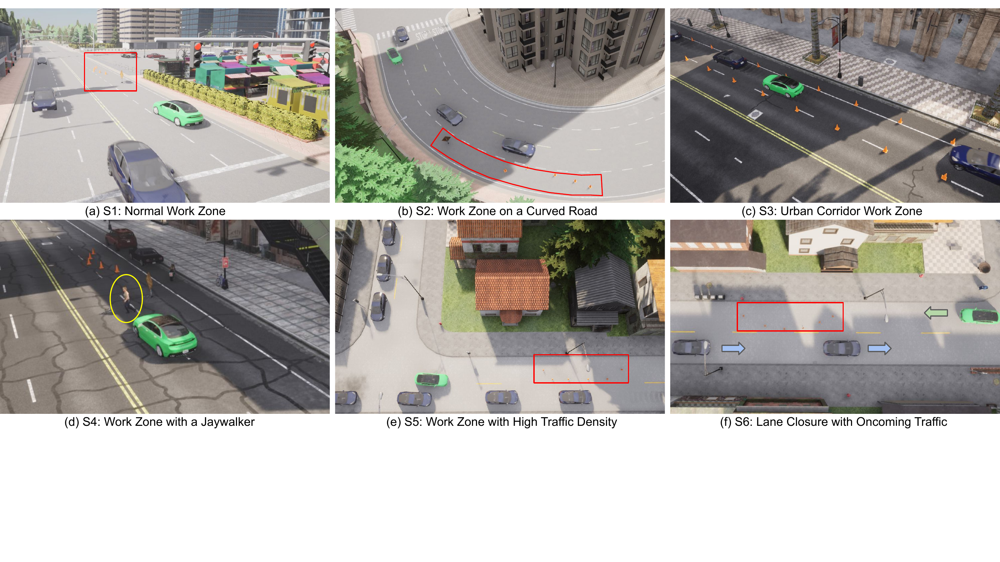
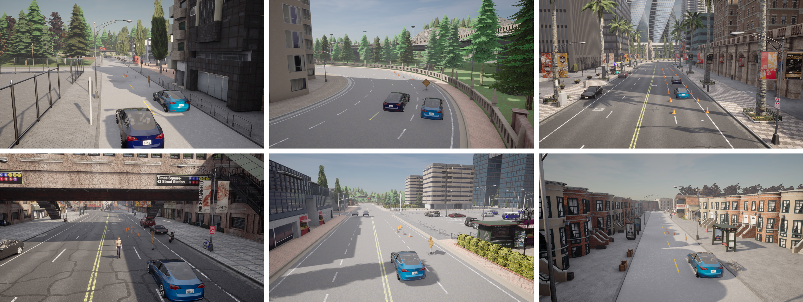
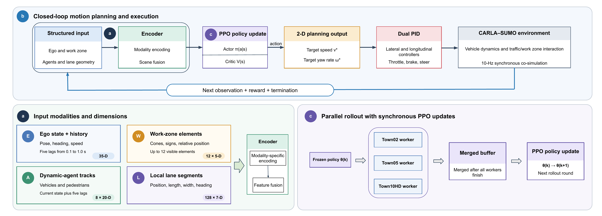
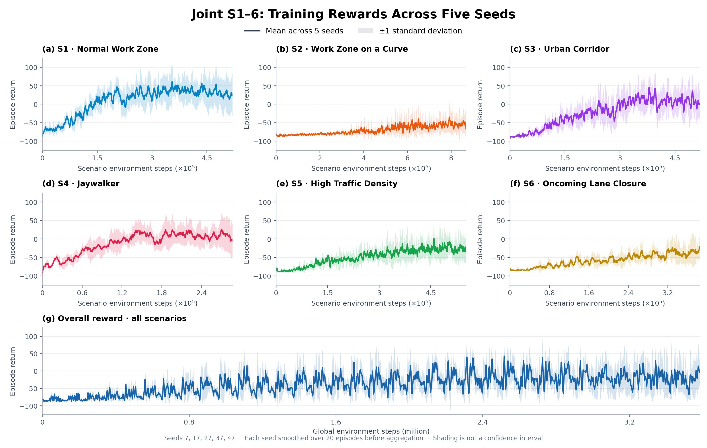

Scenario Illustrations

Abstract
Autonomous driving has made substantial progress under general driving conditions, but roadway work zones remain challenging for motion planning. Work zones temporarily change lane layouts and restrict available road space, complicating interactions with surrounding vehicles and pedestrians, while limited datasets dedicated to work-zone motion planning hinder planner training and evaluation. Simulation supports controlled training and evaluation in safety-critical scenarios, while reinforcement learning allows planners to learn from interactions with the environment. We introduce WZ-Plan, a configurable CARLA–SUMO testbed comprising a normal-traffic work zone and five safety-critical scenario families—curved work zones, constrained corridors, jaywalker encounters, dense traffic, and opposing-lane closures—and demonstrate its use with a jointly trained Proximal Policy Optimization (PPO) planner and structured scene encoder. Scenario-wise evaluation characterizes planner capabilities, failure modes, and within-town transfer limitations, illustrating WZ-Plan's value as a platform for systematic development and evaluation of work-zone motion planners.
Six Work-Zone Scenario Families

Fig. 1. Overview of the six roadway work-zone scenarios: (a) S1 normal work zone, (b) S2 work zone on a curved road, (c) S3 urban corridor work zone, (d) S4 work zone with a jaywalker, (e) S5 work zone with high traffic density, and (f) S6 lane closure with oncoming traffic.
Method Overview

Fig. 2. Overview of the proposed motion-planning and training framework. (a) Structured observation modalities are encoded into a compact scene representation. (b) The PPO policy generates target-speed and target-yaw-rate commands, executed by dual PID controllers in the CARLA–SUMO closed loop. (c) Three simulation workers collect parallel rollouts using a frozen policy, merged before each synchronized PPO update.
Training Dynamics

Fig. 3. Joint S1–S6 training across five seeds. Lines and shaded bands show the mean and ±1 sample standard deviation after per-seed 20-episode smoothing and interpolation onto a common step grid.
Policy Demos
S1: Overview — normal work zone
S1: Chase view — normal work zone
S3: Overview — safe corridor
S3: Chase view — safe corridor
S4: Overview — jaywalker
S4: Chase view — jaywalker
S5: Overview — high traffic
S5: Chase view — high traffic
Results
Table II. Targeted S2/S6 success rates (%)
| Scenario | Variant | Seed / Policy | Val | Test |
|---|---|---|---|---|
| S2 | Joint / Fixed-OD | 7 / P23 | 50.00 | 1.33 |
| S2 | Joint / Road-Arc | 7 / P33 | 90.00 | 0.00 |
| S6 | S6-only | 7 / P32 | 100.00 | 0.00 |
| S6 | S6-only | 27 / P30 | 53.33 | 33.33 |
Table III. S1345 outcomes of two joint policies (%)
| Scenario | Val | Test | Collision | Off-road | WZ |
|---|---|---|---|---|---|
| Seed27 / P32 | |||||
| S1 | 100.00 | 96.67 | 3.33 | 0.00 | 0.00 |
| S3 | 40.00 | 16.67 | 12.67 | 0.00 | 70.67 |
| S4 | 66.67 | 38.67 | 0.00 | 61.33 | 0.00 |
| S5 | 83.33 | 93.33 | 0.00 | 6.67 | 0.00 |
| Macro | 72.50 | 61.33 | 4.00 | 17.00 | 17.67 |
| Seed17 / P27 | |||||
| S1 | 96.67 | 100.00 | 0.00 | 0.00 | 0.00 |
| S3 | 93.33 | 56.67 | 6.00 | 0.00 | 37.33 |
| S4 | 30.00 | 14.00 | 0.00 | 85.33 | 0.67 |
| S5 | 16.67 | 69.33 | 0.00 | 0.67 | 30.00 |
| Macro | 59.17 | 60.00 | 1.50 | 21.50 | 17.00 |
Table IV. Success across five joint-training seeds (%)
| Scenario | Val | Test |
|---|---|---|
| S1 | 84.00 ± 16.40 | 66.13 ± 39.20 |
| S3 | 68.00 ± 22.92 | 38.67 ± 28.35 |
| S4 | 64.67 ± 24.79 | 51.60 ± 42.13 |
| S5 | 41.33 ± 31.68 | 52.53 ± 28.77 |
| Macro | 64.50 ± 8.39 | 52.23 ± 9.17 |
Validation uses 30 episodes per scenario; test uses 150 completed episodes per scenario (50 per origin). Collision, Off-road, and WZ are test failure rates over all completed test episodes.